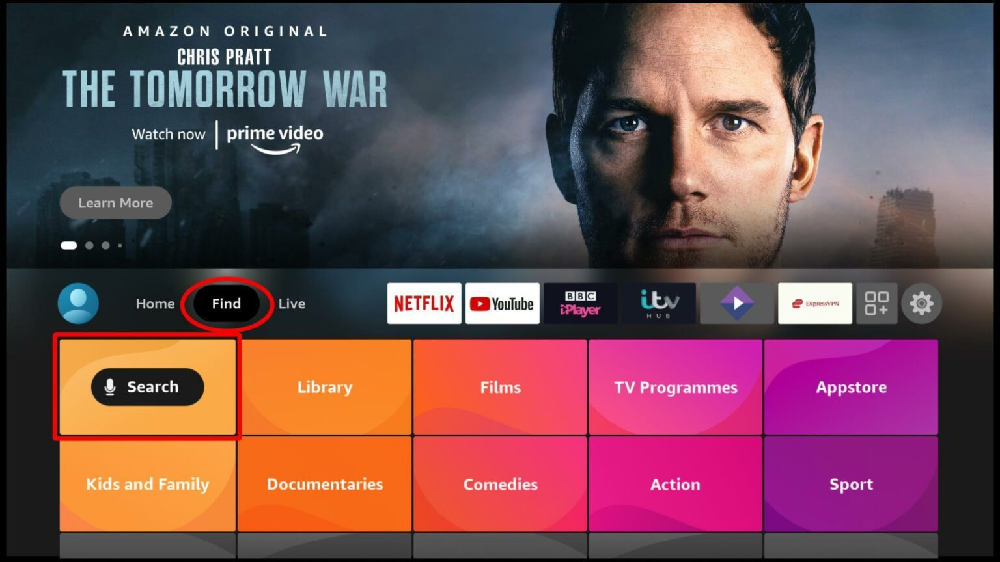
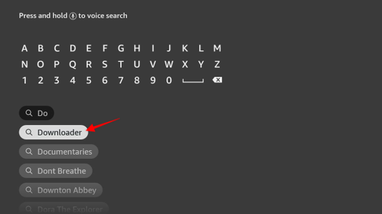
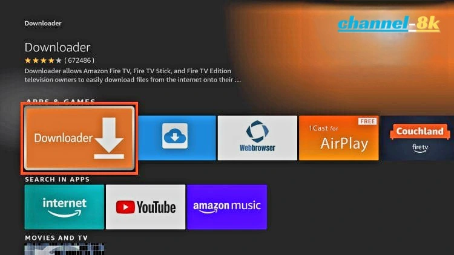
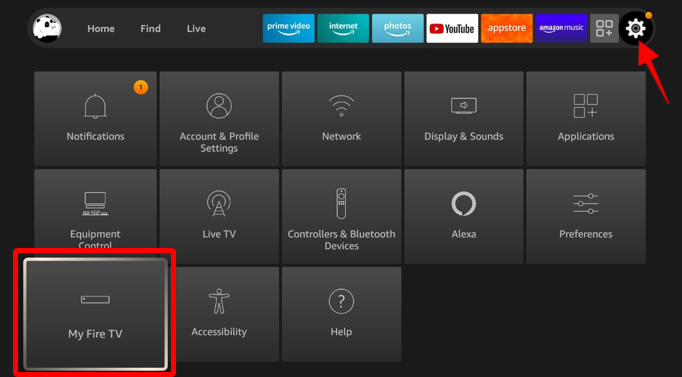
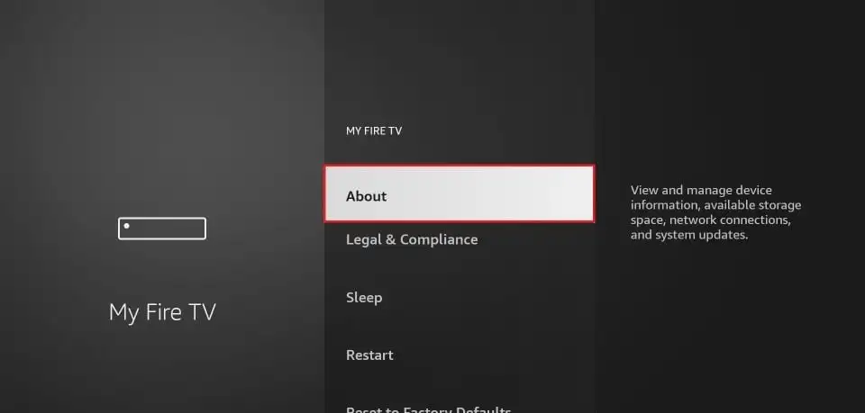
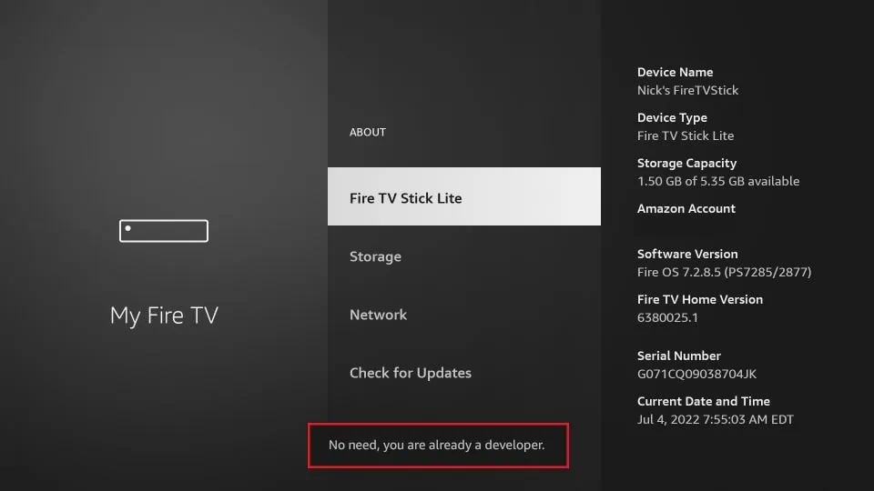
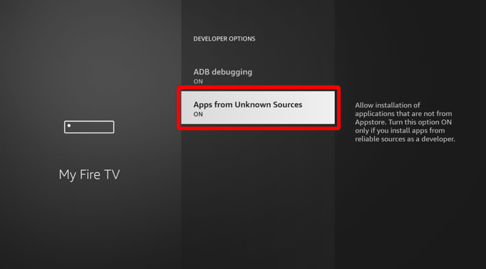
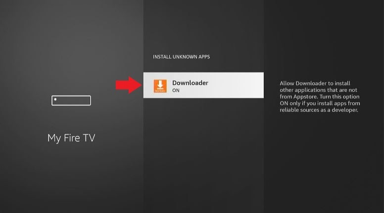
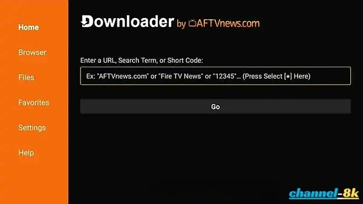

How to Allow Downloader to Install Unknown Apps on Firestick & Android TV (Step-by-Step Guide) - 2026
Many popular IPTV players and streaming apps are not available on the official Amazon Appstore or Google Play Store. To install them, you need to use a method called sideloading. In this guide, you’ll learn how to install the Downloader app and enable the “Install Unknown Apps” setting on Firestick and Android TV.
Sideloading is the process of installing apps from third-party sources instead of the official app store. This does not mean jailbreaking your device. It’s a normal and widely used method, especially for installing IPTV apps or other unavailable applications.
⚠️ Important: Only download APK files from trusted sources to keep your device secure.
The “Downloader” app for Fire Stick and Android TV, created by AFTVnews, is a simple tool that lets you download files directly to your device. It’s mainly used for sideloading apps that aren’t available in official app stores. The app includes a built-in browser, supports direct links, and allows quick downloads using short codes, making it easy and convenient to use.
Firestick & Android TV: Sideloading Setup
The Downloader app is one of the easiest tools to install APK files on Firestick and Android TV. It allows you to download apps directly using a URL and install them in seconds.
Step 1: Install Downloader
Downloader allows Firestick users to download and install third-party apps as the device doesn’t allow downloads via the browser. The app is easy to install as it is available on the Amazon Store.
-
Open Search: On the Firestick main screen, go to
Find, then
click Search.

-
Type Downloader: Start typing Downloader, and
you’ll get a
suggestion on the screen. Click it to search for the app.

-
Select the App: Downloader should now appear as the first
suggestion. Click on
it, and Download it

Step 2: Prep Your Firestick
By default, Firestick blocks the installation of third-party apps for security. You will need to tweak these settings before you can install your preferred IPTV players.
Allow "Apps from Unknown Sources"
Granting this permission will let you install apps you sideload via the Downloader app.
-
Go to Settings: From the Firestick home screen and
click My Fire
TV.

-
Developer Options: Select Developer
options.

-
if Developer Options are hidden, click about to enable it. if you
have it skip to step :7.

-
Click on your Fire TV Stick 7 times to unlock Developer
Options.

-
After Clicking 7 times you will see message "Developer
Options Enabled".

-
Once Developer Options are enabled, select it from the
menu.
-
Enable Installation:
For older devices: Click Apps from Unknown Sources to change the state from Off to On.

For Firestick Lite / Gen 3: Click the option to see a list of apps. Click Downloader to turn the state to On.

Now, your device can install apps through Downloader
🚀 How to Install Top IPTV Apps using Downloader Codes
Once you have configured the permissions above, you can install any IPTV player by entering a direct-download code into the Downloader app. Here are the most reliable codes for 2026:

1. IPTV Smarters Pro
The industry standard for Firestick users. Features a great UI and multi-screen support. View full installation guide.
Downloader Code: 250931
2. IBO Player Pro
A premium, lightning-fast player optimized specifically for 4K/8K streaming and Smart TV layouts. View full setup guide.
Downloader Code: 923441 or 5546232
3. GSE Smart IPTV
A highly versatile player that supports a massive variety of formats and advanced playlist options. View full setup guide.
Downloader Code: 298344
To Install: Simply open your Downloader app, enter one of the codes above into the URL field, and click Go. The app will download and prompt you to install automatically.
Conclusion
Your device is now fully ready for any third-party application. With the Downloader app properly configured, you can explore the best IPTV players available to enhance your viewing experience.
For the best streaming performance without buffering, ensure your internet speed is at least 25 Mbps for 4K and 8K content.